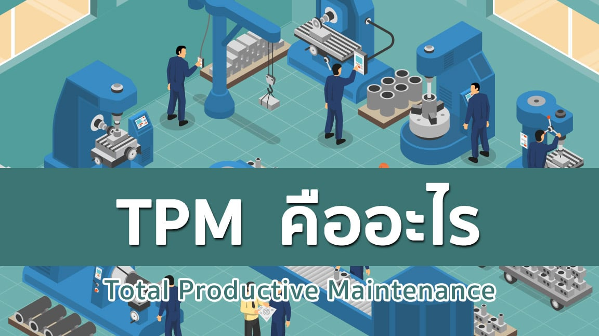
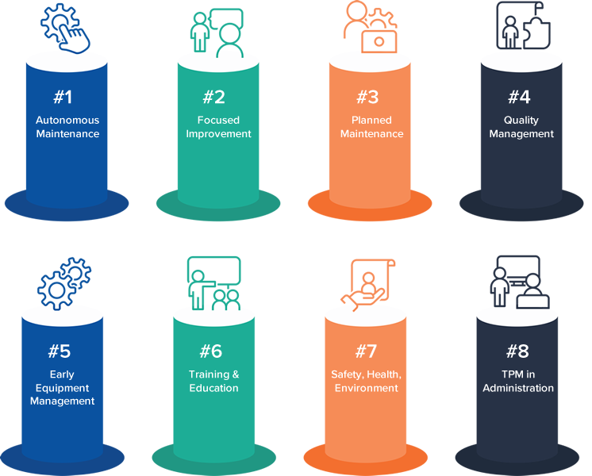

TPM
(Total Productive Maintenance)

จุดมุ่งหมายของ TPM คือ
การเพิ่มประสิทธิภาพของระบบการผลิต เพื่อทำให้บริษัทสามารถ สร้างผลกำไรได้โดยมีวิธีการ คือ
การกำจัด Loss ทุกรูปแบบให้หมดสิ้นไป ด้วยการทำให้ “เป็นศูนย์” และ “ป้องกันการเกิดซ้ำ,
ป้องกันล่วงหน้าก่อนเกิด” (Zero Loss)
Total
: ในความหมายของ TPM คือ “Total Involvement” หรือ “การมีส่วนร่วมทั้งหมด”
Productive
หมายถึง การบรรลุตามวัตถุประสงค์หรือเป้าหมายที่พึงปรารถนาหรือเป็นไปตามที่คาดหวังไว้ พูดง่ายๆ ชัดๆ
ก็คือ ประสิทธิผล พิจารณาจากการนำผลของงาน โครงการ หรือกิจกรรม ที่ได้รับเปรียบเทียบกับวัตถุประสงค์ หรือเป้าหมาย
TPM
เป็นกระบวนการที่ให้พนักงานทุกคนมีส่วนร่วมในการบำรุงรักษาอุปกรณ์ เครื่องจักรของตนเอง
เพื่อบรรลุเป้าหมายโดยรวมขององค์กร พร้อมกับเน้นเทคนิกการบำรุงรักษาเชิงรุก (Proactive Maintenance)
และ การบำรุงรักษาเชิงป้องกัน (Preventive Maintenance) เพื่อการผลิตที่สมบูรณ์แบบนั่นคือ
No Breakdown : ไม่มีการหยุดงาน โดยไม่ได้วางแผน
No Small Stops or Slow Running : ไม่มีการหยุดเล็กๆน้อย หรือ เครื่องจักรทำงานช้าลง
No Defects : ไม่มีของเสียส่งถึงมือลูกค้า
No Accidents : ไม่มีอุบัติเหตุที่ส่งผลต่อความปลอดภัยของพนักงาน
หากทำTPM จะได้เห็นการเปลี่ยนแปลงที่ชัดเจนด้วยกัน 2 อย่างคือ
1. การปรับปรุงระบบคน
ผู้ปฎิบัติการ : ความสามารถในการบำรุงรักษาด้วยตนเอง
ช่างซ่อมบำรุง : ความสามารถในการบำรุงรักษาเครื่องจักร Mechatronics
วิศวกรการผลิต : ความสามารถวางแผนเครื่องจักรที่ไม่ต้องบำรุงรักษา
2.การปรับปรุงระบบเครื่องจักร
ปรับปรุงระบบเครื่องจักรปัจจุบันเพื่อเพิ่มประสิทธิภาพ
8 Pillar of TPM
การดำเนินการเพื่อมุ่งสู่ Zero Loss

Pillar 1 :Autonomous maintenance (AM)
การบำรุงรักษาด้วยตนเอง
• เมื่อเริ่มใช้งานการบำรุงรักษาอัตโนมัติ (Autonomous Maintenance) หมายความว่า
ผู้ปฎิบัติงานจะต้องได้รับการฝึกฝน ฝึกอบรมด้านการบำรุงรักษา มีองค์ความรู้ครบถ้วนเกี่ยวกับงานที่จะต้องทำเป็นประจำ
เช่น การดูแลความสะอาดของน้ำมันหล่อลื่นสามารถตรวจสอบได้ว่าน้ำมันหล่อลื่นมีความสกปรกหรือเสื่อมสภาพหรือยัง
สามารถตรวจสอบปัญหาเบื้องต้นและซ่อมบำรุงได้ จากการเข้าใจกับส่วนประกอบของเครื่องจักรอย่างดี
Pillar 2 : Focus Improvement (Kaizen)
การปรับปรุงเพื่อลดการสูญเสีย
• แนวคิดของ Kaizen ครอบคลุมความคิดที่หลากหลาย เกี่ยวข้องกับการทำให้สภาพแวดล้อมในการทำงาน
มีประสิทธิภาพและประสิทธิผลมากขึ้น โดยสร้างบรรยากาศในทีม ปรับปรุงขั้นตอนในการใช้ชีวิตประจำวัน สร้างความผูกพันกับพนักงาน
และทำให้งานบรรลุผลมากขึ้น เหนื่อยน้อยลงและปลอดภัยยิ่งขึ้น
Pillar 3 : Planned Maintenance (PM)
การบำรุงรักษาตามแบบแผน
• Planned maintenance หรือ การบำรุงรักษาตามแผน หมายถึง กิจกรรมบำรุงรักษาที่มีการวางแผนจัดทำเอกสาร
และกำหนดเวลาล่วงหน้าไว้ จุดมุ่งหมายของการบำรุงรักษาตามแผน คือ การลดเวลาหยุดทำงานของเครื่องจักร (Machine Downtime)
โดยการมีทรัพยากรที่จำเป็นทั้งหมดเตรียมไว้เรียบร้อยแล้ว เช่น แรงงาน ชิ้นส่วนอุปกรณ์ และ กลยุทธ์ในการซ่อมบำรุงและใช้ทรัพยากรที่
เตรียมไว้
Planned maintenance มีสองประเภทหลักๆ
1.ประเภทแรก คือ Preventive Maintenance การบำรุงรักษาเชิงป้องกันตามแผน
ซึ่งเป็นการบำรุงรักษาตามกำหนดเวลาโดยมุ่งเป้าไปที่การป้องกันและซ่อมแซมทรัพย์สินก่อนที่เครื่องจักรจะล้มเหลว
ตัวอย่างเช่น จะดำเนินการเปลี่ยนน้ำมันหล่อลื่นทุก 3,000 ชั่วโมง หรือ 2 เดือนเพื่อป้องกันการเสียหายของ
ซีล วาล์ว สึกหรอ
2.ประเภทที่สอง คือ การวางแผนบำรุงรักษาที่ไม่ได้กำหนดไว้
ซึ่งจะขึ้นอยู่กับกลยุทธ์ในการซ่อมแซมของทีมซ่อมบำรุง เป็นการเตรียมเปลี่ยนวัสดุ อุปกรณ์โดยเร็วที่สุดเมื่อเกิด
ความล้มเหลว จะใช้ในกรณีที่ อุปกรณ์นั้นๆ ไม่มีความสำคัญ หรือ มูลค่าต่ำ และ ไม่เหมาะกับการซ่อมบำรุง
การเปลี่ยนจึงง่ายและรวดเร็วกว่า
Pillar 4 : Quality Maintenance
การบำรุงรักษาเชิงคุณภาพ
• Quality Maintenance หรือ การบำรุงรักษาคุณภาพ เป็นเสาหลักที่ 4 ของ Total Productive Maintenance
โดยมีจุดมุ่งหมายคือการควบคุมให้ผลผลิตไม่มีความผิดพลาดเกิดขึ้นและส่งไปถึงมือลูกค้า (Zero Defect) โดยมุ่งเน้นไปที่การตรวจจับ
ข้อผิดพลาดในการออกแบบการทำงานและการป้องกันในกระบวนการผลิต โดยใช้การวิเคราะห์สาเหตุที่แท้จริง (Root Cause Analysis)
โดยเฉพาะหลักการ “5 Whys” เพื่อระบุและกำจัดแหล่งที่มาของข้อบกพร่องที่เกิดขึ้นซ้ำ ด้วยการตรวจหาแหล่งที่มาของข้อผิดพลาด
หรือข้อบกพร่องในเชิงรุกกระบวนการต่างๆจึงมีความน่าเชื่อถือมากขึ้น
Quality Maintenance ช่วยในเรื่อง
- กำหนดเป้าหมายเฉพาะประเด็นด้านคุณภาพด้วยโครงการปรับปรุง ที่มุ่งเน้นไปที่การค้นหาและกำจัดแหล่งที่มาของข้อบกพร่อง
- ลดจำนวนของข้อบกพร่อง
- ลดค่าใช้จ่ายในการตรวจจับข้อบกพร่องหลังจากผลิตแล้ว (แก้ปัญหาที่ปลายเหตุ)
Pillar 5 : Early Management (EEM)
การจัดการเครื่องจักรใหม่
• กระบวนการใช้ความรู้ในทางปฎิบัติและความเข้าใจโดยเกี่ยวกับอุปกรณ์การผลิตของคุณ ที่ได้มาจากการบำรุงรักษา
ที่มีประสิทธิผลทั้งหมดและใช้เพื่อการปรับปรุงการออกแบบอุปกรณ์ใหม่ ซึ่งจะเป็นการออกแบบอุปกรณ์ที่มาจากการป้อนข้อมูลของผู้ใช้งาน
และดูแลเครื่องจักรอย่างใกล้ชิด
- เมื่อพูดถึงการออกแบบสิ่งสำคัญที่ต้องพูดถึงคือสิ่งต่างๆ เช่น ความง่ายในการทำความสะอาดเครื่องจักร ความง่ายในการดูแล
ระบบหล่อลื่นการวางการควบคุมตามหลักสรีรศาสตร์ในแบบที่ผู้ปฎิบัติงานสามารถใช้งานได้ง่ายและคำนึงถึงความปลอดภัย
กระบวน Early Equipment Maintenance (EEM) มักนำหลักการของ Lean Manufacturing มาประสานกับการออกแบบและ
ผลิตอุปกรณ์
กลยุทธ์ของ Early Equipment Maintenance ประกอบด้วยสามองค์ประกอบดังนี้
1.การออกแบบเพื่อประกันคุณภาพการผลิต
2.ออกแบบเพื่อความสะดวกและง่ายต่อการบำรุงรักษา
3.เพื่อต้นทุนวงจรชีวิตผลิตภัณฑ์ (MTBF)
Pillar 6 :Education and Training
ฝึกอบรมเพื่อเพิ่มทักษะการเดินเครื่องและการบำรุงรักษา
• การให้ความรู้และการอบรมเป็นสิ่งจำเป็นอย่างยิ่งและเป็นส่วนหนึ่งที่สำหรับกระบวนการ Total Productive Maintenance
หากไม่มีการฝึกอบรมบุคลากรพวกเขาจะให้ผลลัพธ์ปานกลางถึงแย่ บางครั้งอาจจะให้เกิดความผิดพลาดและส่งผลกระทบอย่างรุนแรง
ต่อผลผลิตโดยรวมขององค์กร ดังนั้นตั้งแต่ผู้ปฎิบัติงานจนถึงผู้จัดการอาวุโสทุกคนต้องมีส่วนร่วมในการฝึกอบรมได้รับข้อมูลเชิงลึก
เกี่ยวกับความสำคัญขั้นตอนการใช้งานรูปแบบการปฎิบัติของ TPM และด้วยเหตุนี้ควรได้รับการสนับสนุนจากผู้บริหาร
TPM ใช้ระบบระดับความเชี่ยวชาญในการฝึกอบรมแบ่งได้ดังนี้
Level 1 ไม่มีความรู้ : พนักงานยังไม่สามารถทำงานบางอย่างได้อย่างถูกต้อง
Level 2 มีความรู้พื้นฐาน : พนักงานมีความรู้ทางทฤษฎีที่จำเป็น แต่ไม่ใช่ทักษะที่จำเป็นในการปฎิบัติงาน
Level 3 มีประสบการณ์บางส่วน : พนักงานได้รับอนุญาตและมีความสามารถทำงานบางอย่างภายใต้การดูแลอย่างใกล้ชิด
Level 4 ผู้ปฎิบัติงานอิสระ : พนักงานสามารถปฎิบัติงานได้โดยไม่ต้องมีผู้ดูแล
Level 5 ที่ปรึกษา : พนักงานทีความรู้ทางทฤษฎีและมีประสบการณ์ในการปฎิบัติเพียงพอที่จะปฎิบัติงานได้อย่างอิสระ
และสามารถดูแลแนะนำผู้อื่นได้
Pillar 7 : Safety Health and Environment Management
การจัดการด้านความปลอดภัย อนามัยและสิ่งแวดล้อม
• การรักษาสภาพแวดล้อมการทำงานที่ปลอดภัยหมายว่าพนักงานสามารถปฎิบัติงานในสถานที่ปลอดภัย
ไม่มีความเสี่ยงต่อสุขภาพ สิ่งสำคัญคือต้องสร้างสภาพแวดล้อมที่ทำให้การผลิตมีประสิทธิภาพมากขึ้น แต่ไม่ควรเสี่ยงต่อ
ความปลอดภัยและสุขภาพของพนักงาน
ลักษณะพื้นฐานของสถานที่ทำงานควรสะอาด การทำความสะอาดชิ้นส่วนเครื่องจักรทั้งหมดจะต้องทำอย่างสม่ำเสมอ
เพื่อหลีกเลี้ยงอุบัติเหตุหรือการบาดเจ็บ สภาพแวดล้อมที่สะอาดมีผลกระทบทางจิตวิทยาเชิงบวกด้วยเหตุนี้จึงช่วยเพิ่มประสิทธิผล
และประสิทธิภาพโดยรวมของผู้ปฎิบัติงานได้
ในระหว่างการอบรมเกี่ยวกับ TPM พนักงานจะต้องได้รับแนวคิด ความรู้ และความเข้าใจในการทำความสะอาด
การดูแลด้านความปลอดภัยพร้อมกับการใช้อุปกรณ์และขั้นตอนต่างเพื่อช่วยในการดูแลสุขอนามัยโดยรวม เช่น
Standard operating procedures (SOP's) : คือ ชุดของคำแนะนำขั้นตอนโดยรวมขององค์กร
ระเบียบปฎิบัติเพื่อให้บรรลุเป้าหมายอย่างมีประสิทธิภาพ
Personal protective equipment (PPE) : ใช้งานอุปกรณ์ป้องกันส่วนบุคคล เช่น หมวก รองเท้าเซฟตี้ อย่างเคร่งครัดเพื่อ
ลดการบาดเจ็บ
First-aid Kits : มีชุดปฐมพยาบาลในสถานที่
Pillar 8 : TPM in administration
แม้ว่า TPM จะเน้นที่เครื่องจักรและการผลิตเป็นหลัก การบำรุงรักษาที่มีประสิทธิผลโดยรวมควรพิจาณาให้ไกลกว่าแค่พื้นที่ใน
ส่วนของโรงงานยังมีส่วนของฝ่ายสนับสนุนอีกหน่วงงานที่มีความสำคัญไม่แพ้กันคือแผนกธุรการและสำนักงาน
แผนกธุรการมีหน้าที่ในการสนับสนุนการผลิตโดยการปรับปรุงสิ่งต่างๆ เช่น การประมวลผลการสั่งซื้อ การจัดซื้อ และการจัดตารางเวลา
ฟังก์ชั่นการดูแลระบบมักเป็นชั้นตอนแรกในกระบวนการผลิต ถ้าใช้ TPM ในงานบริหารได้ดีจะช่วยในเรื่อง
1.ขยายประโยชน์ TPM ออกนอกส่วนของโรงงานด้วยการจัดการของเสียในส่วนของหน้าที่การบริหาร
2.รองรับการผลิตผ่านการปรับปรุงการดำเนินการด้านการบริหาร เช่น การประมวลผลคำสั่งซื้อ และจัดการตารางเวลา